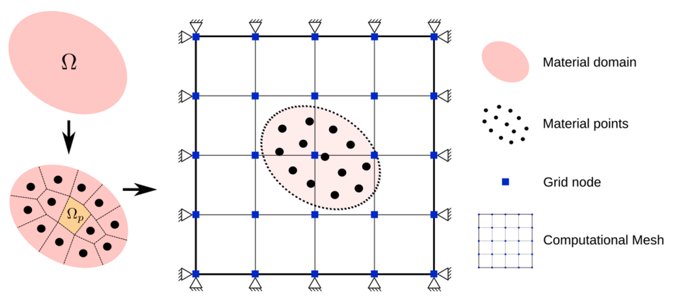
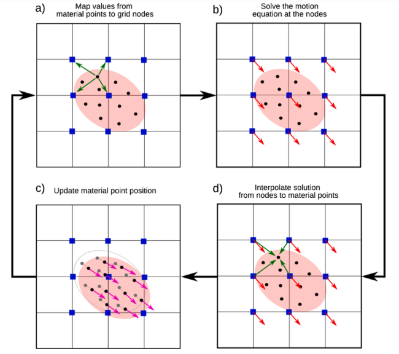

|
MPM-Geomechanics
Material Point Method for simulating geo-materials under large deformation conditions
|
Manual Theory under development
The Material Point Method, or MPM, is a hybrid Lagrangian-Eulerian method that allows for simulating continuum mechanics processes involving large deformations and displacements without issues related to computational mesh distortion. In MPM, the material domain to be simulated is discretized into a set of material points that can move freely within a computational mesh, where the equations of motion are solved. The material points store all variables of interest during the simulation, such as stress, pore pressure, temperature, etc., giving the method its Lagrangian characteristic.

Figure 1: MPM Discretization [2]
In an MPM computational cycle, all variables stored in the material points are computed at the computational mesh nodes using interpolation functions, and then the equation of motion is solved at the nodes. The nodal solution obtained is interpolated back to the particles, whose positions are updated, and all nodal variables are discarded.

Figure 2: MPM Cycle [3]
MPM enables the numerical solution of the equation of motion in continuum mechanics by using the nodes of an Eulerian mesh for integration and Lagrangian material points to transfer and store the properties of the medium.
The equation of motion in continuum mechanics
\[ \frac{\partial \sigma_{ij}}{\partial x_j} + \rho b_i = \rho a_i \]
where \( \sigma_{ij} \) is the Cauchy stress tensor, \( \rho \) is the density, \( b_i \) is the body force (regarding its mass), and \( a_i \) is the acceleration of any point of the continuum.
Note that all equations are in tensor notation. So \( a_i \) is the acceleration vector with tree dimension in the space \( x, y, z \).
The MPM formulation is obtained from the weak form of the motion equation and using a Petrov–Galerkin discretization scheme. The weak form of motion equation is obtained by multiplying the equation by arbitrary weighting functions, integrating this product over the domain, using integration by parts to reduce the order of the stress term and introducing the boundary conditions
\[ -\int_{\Omega} \sigma_{i j} \delta u_{i, j} dV + \int_{\Gamma} t_i \delta u_i dA + \int_{\Omega} \rho b_i \delta u_i dV = \int_{\Omega} \rho a_i \delta u_i dV \]
where \( \delta u_i \) are virtual displacements, whose value in the boundary is \( \delta u_i |_{\Gamma} = 0 \) and \( t_i \) is an external traction acting on the boundary \( \Gamma \).
In the MPM context any field or property \( f(x_i) \) can approximated using the value stored in the particle \( f_p \):
\[ f(x_i) = \sum f_p \chi_p (x_i) \]
where \( \chi_p \) is the particle characteristic function that defines the volume occupied by the material point:
\[ V_p = \int_{\Omega_p \cap \Omega} \chi_p(x_i) dV \]
consequently, in the MPM context, the density, the acceleration and the stress fields can be approximated by the values stored in particles:
\[ \rho(x_i) = \sum_p \frac{m_p}{V_{ip}} \chi_p(x_i) \]
\[ \rho(x_i) a_i(x_i) = \sum_p \frac{\dot{p_{ip}}}{V_p} \chi_p(x_i) \]
\[ \sigma_{i j}(x_i) = \sum_p \sigma_{i j p} \chi_p(x_i) \]
where \( \dot{p_{i p}} = m_p \dot{v_{ip}} = m_p a_{ip} \).
Replacing these fields in the weak form of the motion equation we have:
\[ -\sum_p \int_{\Omega_p \cap \Omega} \sigma_{i j p} \chi_p \delta u_{i, j} dV + \int_{\Gamma} t_i \delta u_i dA + \sum_p \int_{\Omega_p \cap \Omega} \frac{m_p}{V_p} b_{i p} \chi_p \delta u_i dV = \sum_p \int_{\Omega_p \cap \Omega} \frac{\dot{p}_p}{V_p} \chi_p a_i dV \]
In the generalized interpolation material point method (GIMP), the resolution of this equation is carried out using a Petrov–Galerkin scheme where the characteristic functions \( \chi_p(x_i) \) are the trial functions and the nodal interpolation functions \( N_I(x_i) \) are the test functions.
To arrive at this scheme, the virtual displacements are expressed using the nodal interpolation functions:
\[ \delta u_i=\sum_I N_{I p} \delta u_{i I} \]
Note that the trial and test functions are such that:
\[ \sum_I N_{I}(x_i) = 1 \]
\[ \sum_p \chi_p(x_i) = 1 \]
Therefore, the resulting discrete form of the motion equation is:
\[ f_{iI}^{int} + f_{iI}^{ext} = \dot{p}_{iI} \]
where
\( p_{iI} = \sum_p S_{Ip} p_{Ip} \) is the nodal momentum,
\( f_{iI}^{int} = -\sum_p \sigma_{ijp} S_{Ip,j} V_p \) is the nodal internal force, and
\( f_{iI}^{ext} = \sum_p m_p S_{Ip} b_{ip} + \int_{\Gamma} t_i N_I(x_i) dA \) is the external force at node \( I \).
Note that the function \( S_{Ip} \) and its gradient \( S_{Ip,j} \) are the weighting functions of node \( I \) evaluated at the position of particle \( p \).
The GIMP shape functions are defined by
\[ S_{Ip} = \frac{1}{V_p} \int_{\Omega_p \cap \Omega} \chi_p(x_i) N_I(x_i) dV \]
and
\[ S_{Ip,j} = \frac{1}{V_p} \int_{\Omega_p \cap \Omega} \chi_p(x_i) N_{I,j}(x_i) dV \]
Note that these functions is also a partition of the unity:
\( \sum_I S_{Ip} = 1 \)
The the weighting function need to be integrated over the particle domain by choosing different characteristic functions and interpolation functions in a Petrov–Galerkin scheme.
In the contiguous particle GIMP (cpGIMP) the characteristic function in defined as step function and the interpolation function is defined as linear function:
\[ \chi_p(x)=\left\{\begin{array}{cc}1 & x \in \Omega_p \\ 0 & x \notin \Omega_p\end{array}\right. \]
\[ N_I(x)=\left\{\begin{array}{c}0 \quad\left|x-x_I\right| \geq L \\ 1+\left(x-x_I\right) / L \quad-L<x-x_I \leq 0 \\ 1-\left(x-x_I\right) / L \quad 0<x-x_I<L\end{array}\right.$ \]
Where the integration is performed analytically within the particle domain.
\[ S_{I p}=\left\{\begin{array}{ll}0 & |\xi| \geq L+l_p \\ \left(L+l_p+\xi\right)^2 / 4 L l_p & -L-l_p<\xi \leq-L+l_p \\ 1+\xi / L & -L+l_p<\xi \leq-l_p \\ 1-\left(\xi^2+l_p^2\right) / 2 L l_p & \quad-l_p<\xi \leq l_p \\ 1-\xi / L & l_p<\xi \leq L-l_p \\ \left(L+l_p-\xi\right)^2 / 4 L l_p & L-l_p<\xi \leq L+l_p\end{array}\right. \]
and
\[ \nabla S_{I p}= \begin{cases}0 & \left|x_p-x_I\right| \geq L+l_p, \\ \frac{L+l_p+\left(x_p-x_I\right)}{2 L l_p} & -L-l_p<x_p-x_I \leq-L+l_p, \\ \frac{1}{L} & -L+l_p<x_p-x_I \leq-l_p, \\ -\frac{x_p-x_I}{L l_p} & -l_p<x_p-x_I \leq l_p, \\ -\frac{1}{L} & l_p<x_p-x_I \leq L-l_p, \\ -\frac{L+l_p-\left(x_p-x_I\right)}{2 L l_p} & L-l_p<x_p-x_I \leq L+l_p . \end{cases} \]
In which \( 2lp \) is the particle domain, \( L \) is the mesh size in 1D, and is the relative particle position to node.
Weighting functions in 3D are obtained by the product of three one-dimensional weighting functions:
\( S_{I p}(x_{i p}) = S_{I p}(\xi) S_{I p} (\eta) S_{I p} (\zeta) \)
where \( \xi=x_p-x_I, \eta=y_p-y_I \) and \( \zeta=z_p-z \).
The discrete form of the motion equation \( f_{iI}^{int} + f_{iI}^{ext} = \dot{p}_{iI} \), is a second order ordinary differential equation in terms of displacement with respect to time, and can be solved by integration, using an explicit or implicit integration scheme.
The displacement, the velocity and the acceleration at time \( t = 0, t^1, t^2, ... , t^n \) are knows, and the values at time \( t^{n+1} \) are required, namely the solution of the problem.
In central difference method, the velocity at \( t^{n+1/2} \) can be approximated as:
\[ \dot{u}^{n+1/2} = ( u^{n+1} - u^{n} ) \Delta t\ \]
and, the acceleration in \( t^{n} \) can be approximated as:
\[ \ddot{u}^{n} = (\dot{u}^{n+1/2} - \dot u ^ {n-1/2})/\Delta t \]
and therefore, the required displacement at \( t^{n+1} \) can be calculated as:
\[ u^{n+1} = u^{n} + \dot u ^ {n+1/2} \, \Delta t \]
, where
\[ \dot u ^ {n+1/2} = \dot u ^ {n-1/2} + \ddot u ^ {n} \Delta t \]
The motion equation in \( t^{n} \) is:
\[ m \, \ddot u ^{n} = f ^{n} \]
So,
\[ \ddot u ^{n} = f ^{n} / m \]
and
\[ \dot u ^ {n+1/2} = \dot u ^ {n-1/2} + f ^{n} / m \, \Delta t \]
The central difference method is conditionally stable, so the time step must be less that a certain value. For linear systems this critical time step value depends on the natural period of the system, in particular for undamped linear systems the critical time step is:
\[ \Delta t_{cr} = T_n \]
\( T_n \) is the smallest natural period of the system. For finite element method the critical time step of the central difference method can be expressed as:
\[ \Delta t_{cr} = min_e [ l^e / c ] \]
, where \( l^e \) is the characteristic length of the element and \( c \) is the sound speed. This time step restriction implies that time step has to be limited such that a disturbance can travel across the smallest characteristic element length withing a single time step. This condition is known as CFL condition, or Courant-Friedrichs-Lewy condition. For linear elastic material the sound speed is:
\[ c = \sqrt{ \frac {E (1-\nu)} {(1+\nu)(1-2\nu)\rho}} \]
In the MPM context the particles can has velocities in the begin ing of any time step, so the critical time speed can be written as:
\[ \Delta t_{cr} = l^e / max_p ( c_p + |v_p| ) \]
In a structured regular mesh, \( l^e \) is the grid cell dimension.
In the MPM the particles stores all the material information and the mesh is used to integrate the motion equation \( \dot{p} = m \frac{dv}{dt} = f \). Therefore, the nodal values of mass, velocity, force, stress, ..., etc., needs no tb interpolated from particles using interpolation functions. After solving the motion equation, the acceleration and velocity are interpolated back to the particles to update their velocities and their positions.
The total force in the motion equation includes internal force and it depends on the stress state store in particles. The stresses can be updated by using a constitutive model, relating stresses with deformations. The deformation tensor can be obtained from the velocity field. The nodal velocities are used to calculate the strain and the vorticity tensor to update the stress. So, in the numerical integration the stresses could be updated with the velocities at the beginning or at the end of each time step. Regarding the velocity field used we have the Update Stress First - USF scheme or the Update Stress Last - USL scheme.
USF Scheme In the USF scheme the velocities in \( n-1/2 \) are used to update the stress state:
\[ v_{iI}^{k-1/2} = p^{k-1/2}_{iI} / m_p = \sum_p S_{Ip} m_p v_{ip}^{i-1/2} / m_I^k \]
USL Scheme In the USL scheme the updated velocities in nodes \( n+1/2 \) are used to update the stress state:
\[ v_{iI}^{k+1/2} = p^{k+1/2}_{iI} / m_I^k \]
MUSL Scheme In the Modified USL scheme, the updated particle velocities are used to update the stress state:
\[ v_{iI}^{k+1/2} = \sum_p S_{Ip} m_p v_{ip}^{i+1/2} / m_I^k \]